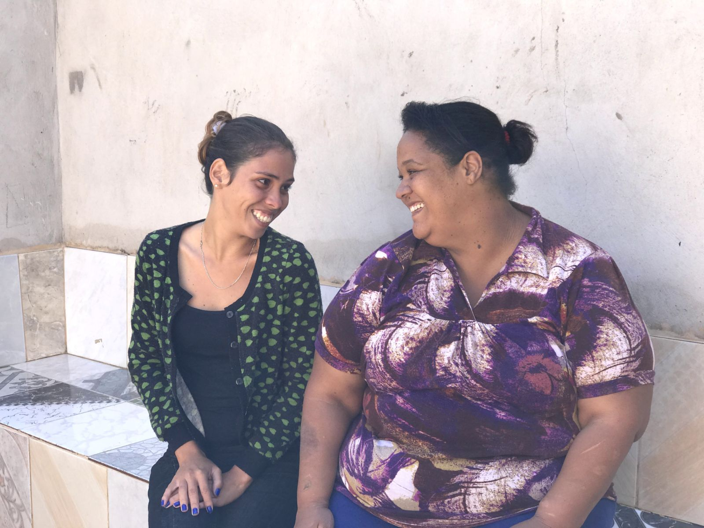
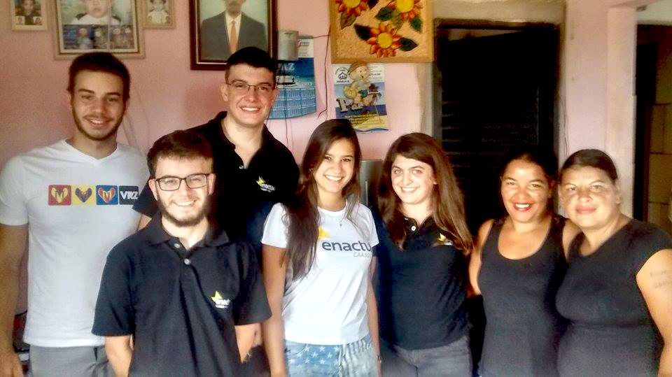
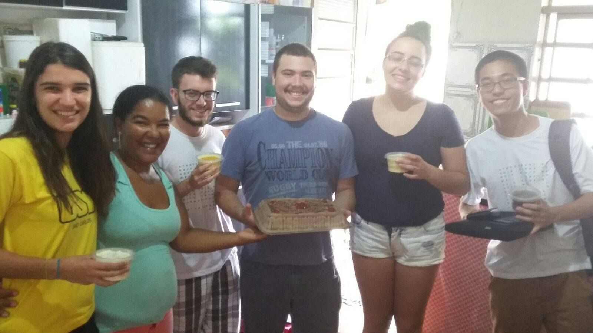

MadreChef
Negócios de alimentação criados com mulheres empreendedoras em situação de vulnerabilidade social e econômica.

- Início
- 2015
- Marcas criadas
- Doce Começo, Divino Sabor e Thapaí
- Renda gerada
- Até R$ 500/mês (+38%)
- Nacional Enactus
- 5º lugar em 2016
O projeto
O potencial culinário como caminho para a autonomia.
O MadreChef criou negócios de vendas para mulheres empreendedoras em situação de vulnerabilidade. Reconhecendo o potencial culinário dessas mulheres, criamos empreendimentos que melhoram suas vidas financeiramente e trazem uma nova perspectiva, uma nova imagem dentro de casa e na sociedade, além de capacitação para seguir com o próprio negócio.

Doce Começo
Bolos de pote que viraram sucesso no campus.
O projeto nasceu em 2015. No projeto Madre Cabrini, conhecemos mães interessadas em atuar como autônomas, entre elas a Néia. Após pesquisa de mercado, decidimos vender bolos de pote nos bares e lanchonetes dos dois campi da USP.
Com capacitação e divulgação nas redes, as vendas deram um salto: a renda de Néia chegou a 500 reais mensais, um aumento de 38% na renda familiar, além de ganhos em autoestima e independência. O projeto ganhou quase R$ 5 mil no edital de Empoderamento Feminino do Walmart e ajudou o time a conquistar o 5º lugar no Nacional de 2016.

Divino Sabor
A expansão para um negócio em grupo.
Por meio de uma associação espírita, conhecemos Thalita, Paola, Miriam e Mislaine, que enfrentavam problemas parecidos com os da Néia. A associação tinha uma cozinha industrial ociosa cinco dias por semana, e os bairros onde elas moravam tinham grande demanda e pouca concorrência.
Assim nasceu a Divino Sabor, com congelados e produtos para coffee breaks sob encomenda, pedidos via Facebook. Com a saída de duas integrantes, Thalita e Paola repensaram a marca para atender as maiores demandas do mercado.

Thapaí
Produtos naturais e saudáveis na periferia.
Depois de semanas de replanejamento surge a Thapaí, fusão dos nomes de Thalita e Paola, com um modelo de negócio baseado em produtos naturais: chips de frutas e legumes e burgers veganos e vegetarianos congelados.
A marca firmou parcerias com restaurantes da cidade para garantir escoamento contínuo e renda complementar. Além do empoderamento feminino, a Thapaí levou à comunidade o conhecimento sobre produtos naturais, muitas vezes distantes da realidade dos bairros periféricos.

Esse projeto terminou. O impacto continua.
Conheça os projetos ativos do time e veja como acompanhar ou apoiar o que estamos construindo agora.